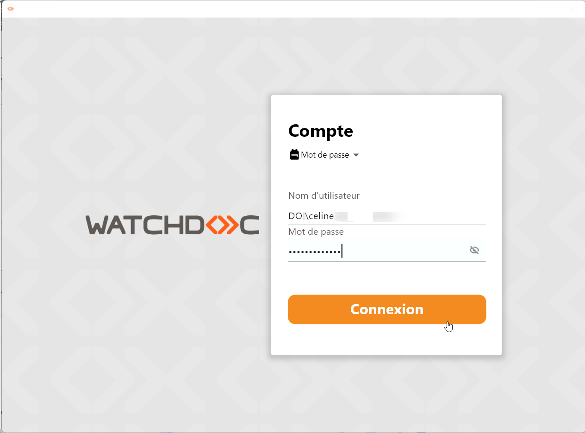
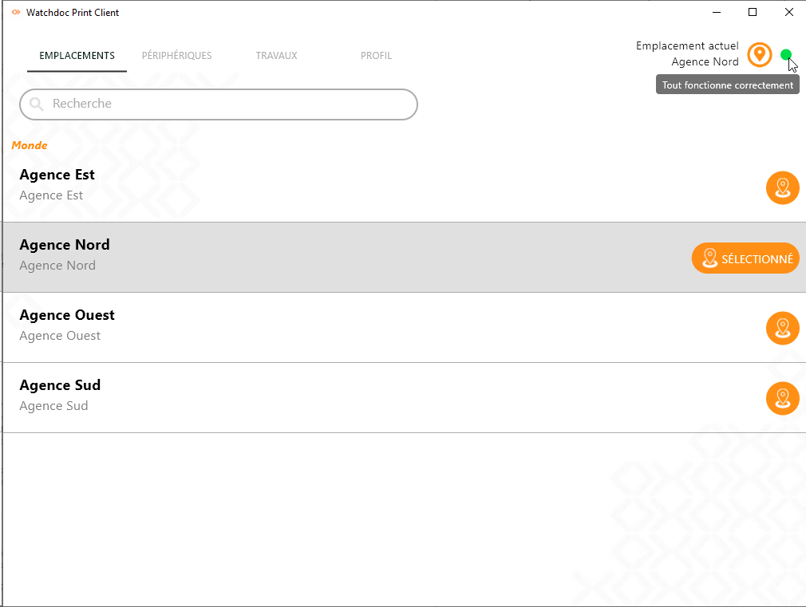
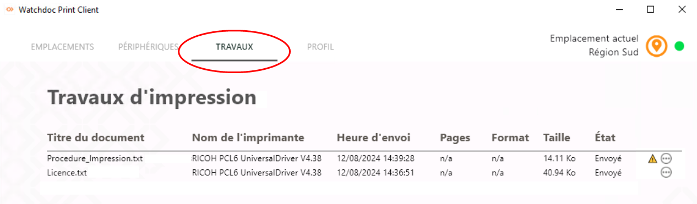
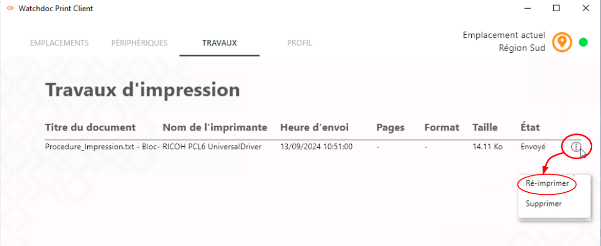
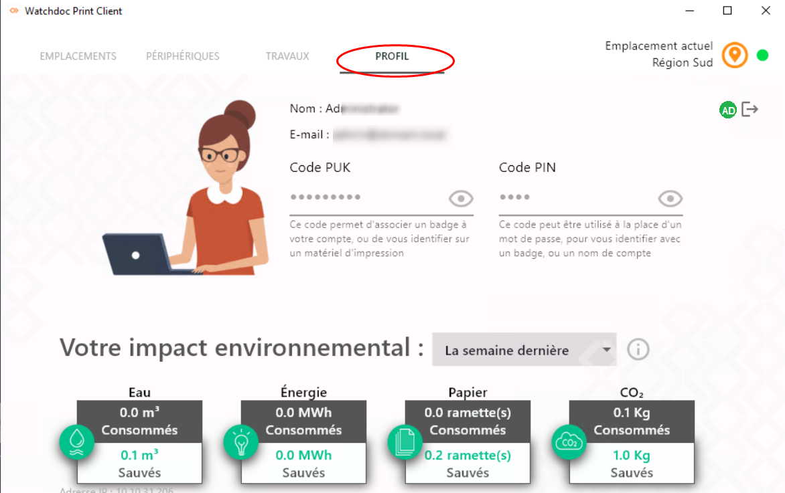

S'authentifier dans WPC for Windows
Une fois WPC for Windows installé sur votre poste de travail, une interface s'affiche pour vous permettre de vous authentifier.
Une fois authentifié, vous n'aurez plus à le faire.
Si vous ne souhaitez pas vous authentifier immédiatement, vous pouvez fermer cette interface. Dans ce cas, vous devrez vous authentifier dès que vous lancerez une demande d'impression, un message vous informant que vous ne serez autorisé à imprimer qu'à condition de vous authentifier. 
{kind=link}
Imprimer en situation normale
Après avoir initlialisé WPC for Windows sur votre poste, à droite de l'emplacement, une pastille de couleur précise l'état de connectivité entre l'application et le(s) serveur(s) d'impression.
Lorsque la pastille est orange (au moins 1 des serveurs configurés est hors-service) ou verte (tous les serveurs configurés sont opérationnels), vous pouvez imprimer : 
{kind=link}
-
lancez le travail d'impression depuis votre poste de travail (via la commande Imprimer ou CTRL+P) ;
-
sur votre poste de travail, sélectionnez l'imprimante "universelle" ou l'une des imprimantes installées par WPC lors de l'initialisation ;
-
rendez-vous sur l'une des imprimantes de proximité installées et authentifiez-vous sur le WES ;
-
depuis le WES, débloquez votre impression (cf. Imprimer avec Watchdoc).
Imprimer sur la file d'impression par défaut
Il est possible que les administrateurs aient défini une file par défaut en fonction de l'emplacement. Ainsi, en déplacement dans un autre emplacement que votre emplacement habituel, vous pouvez lancer l'impression immédiatement, sans avoir à installer d'imprimante au préalable.
Dans ce cas, l'imprimante par défaut est signalée par une coche verte :
{kind=link}
En fonction de la politique d'impression appliquée par les administrateurs, vous êtes alors en droit, ou non, de modifier ce choix d'imprimante par défaut.
Consulter la liste des impressions prises en charge par WPC for Windows
Depuis WPC for Windows v7.0.4438, vous pouvez consulter la liste des impressions prises en charge par WPC for Windows :
-
une fois le travail d'impression envoyé, authentifiez-vous dans l'interface WPC for Windows ;
-
cliquez sur l'onglet Travaux : les travaux d'impression pris en charge par WPC for Windows sont listés et leur état est indiqué :
-
prêt : désigne un travail d'impression prêt à être envoyé vers la file d'impression, mais pas encore envoyé.
-
envoyé : désigne un travail d'impression envoyé vers la file d'impression. Vous pouvez aller débloquer l'impression sur le périphérique de votre choix.
-
annulé : désigne un travail d'impression annulé avant être envoyé vers la file d'impression (soit lorsqu'il étati prêt, soit lorsqu'il était en erreur) ;
-
erreur : désigne un travail d'impression envoyé vers la file d'impression, mais qui n'a pas pu être traité en raison d'un dysfonctionnement. Dans ce cas, vous pouvez collecter les fichiers de diagnostic en vue de les faire analyser.
N.B. : le pictogramme situé à droite du travail indique que le travail d'impression a fait l'objet d'une notification relative à un avertissement ou à une redirection.
Vous pouvez cliquer sur le pictogramme pour accéder au travail d'impression dans la liste des travaux en attente afin de débloquer l'impression si vous ne l'avez pas déjà fait.
-
-
Lorsqu'un travail est envoyé,
-
s'il a été imprimé en fonctionnement normal, rendez-vous sur le périphérique d'impression pour valider l'impression depuis le WES (cf.Utiliser le WES) ;
-
s'il a été imprimé en impression directe, récupérez-le directement sur le périphérique sélectionné.
-
{kind=link}
Annuler un travail d'impression
Depuis WPC for Windows v7.0.4438, vous pouvez annuler un travail figurant dans la liste des impressions tant qu'il n'a pas été envoyé, c'est-à-dire si son statut est Prêt ou En erreur.
Pour annuler un travail d'impression :
-
une fois le travail d'impression envoyé, authentifiez-vous dans l'interface WPC for Windows ;
-
cliquez sur l'onglet Travaux : les travaux d'impression pris en charge par WPC for Windows sont listés et leur état est indiqué ;
-
dans la liste, sélectionnez les travaux d'impression dont le statut est Prêt ou En erreur ;
-
cliquez sur le bouton Supprimer ;
-
validez la suppression
Réimprimer un travail d'impression envoyé
Les travaux d'impression envoyés figurent dans la liste des travaux.
Vous pouvez les y consulter
Ils peuvent alors être réimprimés ou supprimés de la liste :
-
sous l'onglet Travaux d'impression, cliquez sur le bouton situé à droite de chaque travail ;
-
dans la liste, cliquez sur Réimprimer.

{kind=link}
è Le travail réapparaît dans la liste avec l'état "Envoyé".
Supprimer un travail d'impression envoyé
Les travaux d'impression figurant dans la liste peuvent être supprimés de la liste :
-
sous l'onglet Travaux d'impression, cliquez sur le bouton situé à droite de chaque travail ;
Consulter votre profil et l'impact environnemental de vos impressions
Cliquez sur l'onglet Profil pour consulter :
-
vos nom et adresse mail
-
vos codes PUK et PIN.
-
les quantités d'eau, d'énergie, de papier et de CO² consommés.
Les valeurs indiquées comme "sauvées" sont le résultat des choix en faveur de la politique éco-responsable proposée par Watchdoc :-
choix de la conversion en recto-verso alors que l'impression était lancée en recto simple,
-
choix de la conversion en noir et blanc alors que l'impression était demandée en couleur,
-
réduction du nombre d'exemplaires :

-
{kind=link}